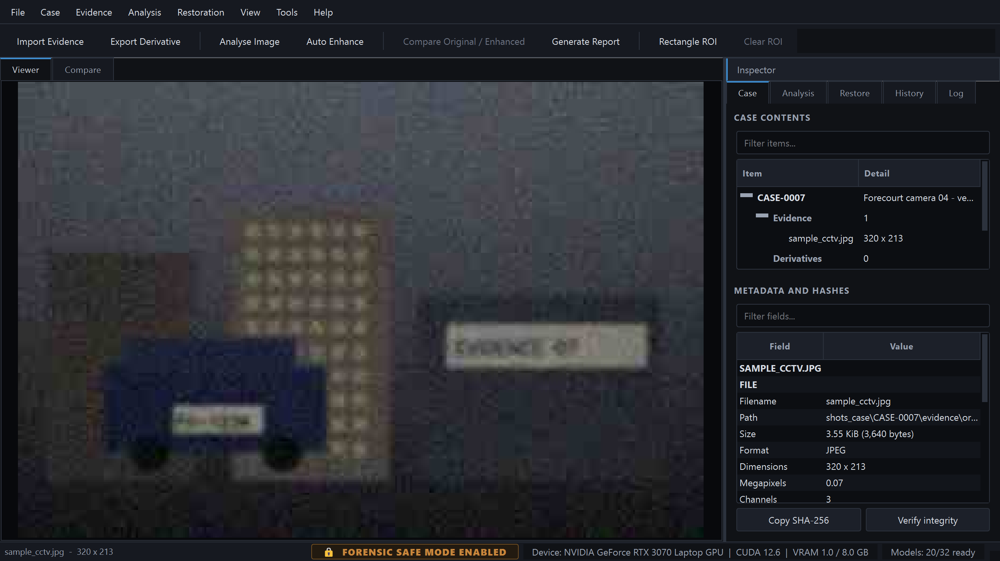
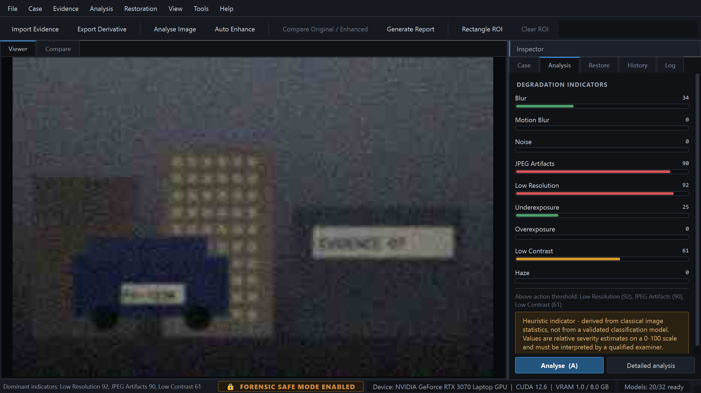
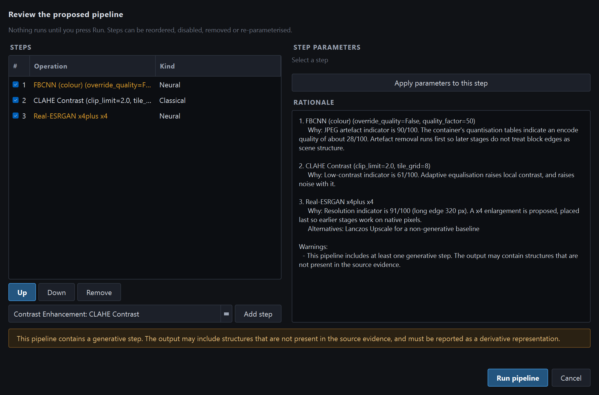
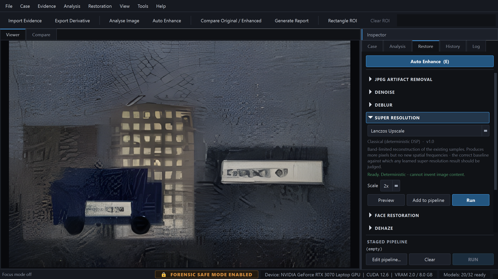
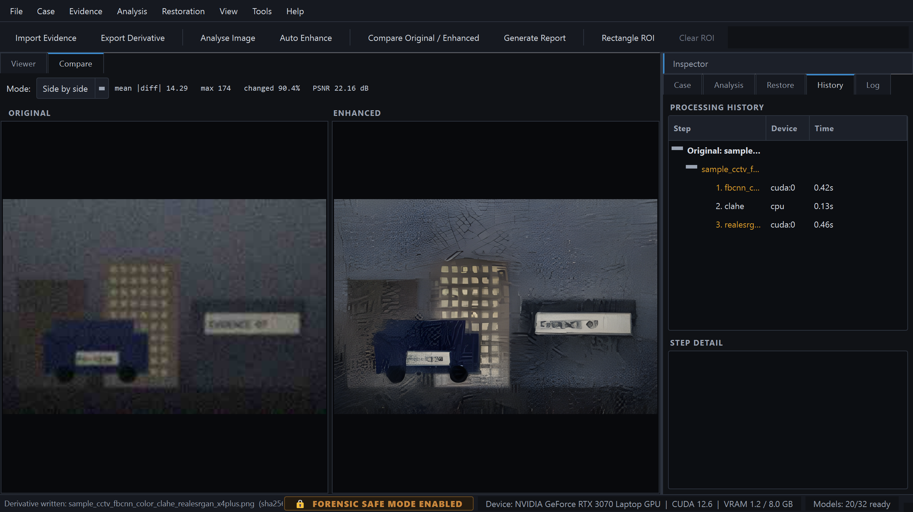
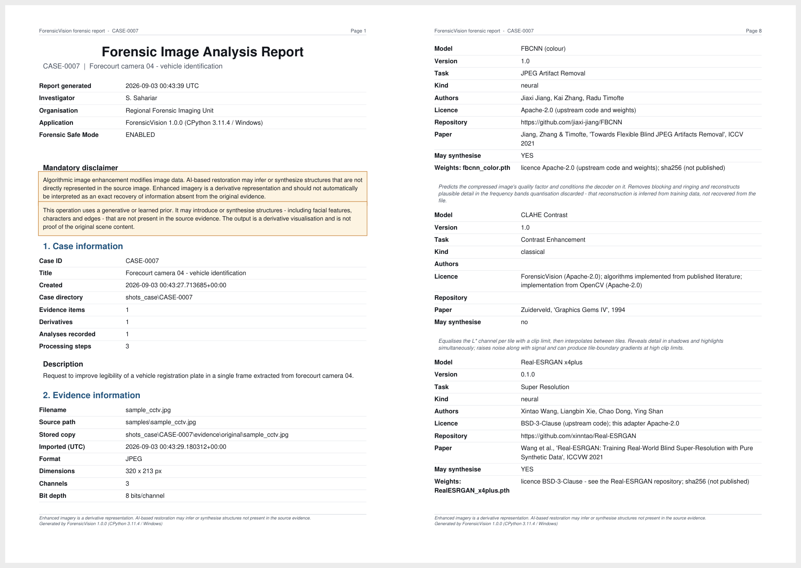
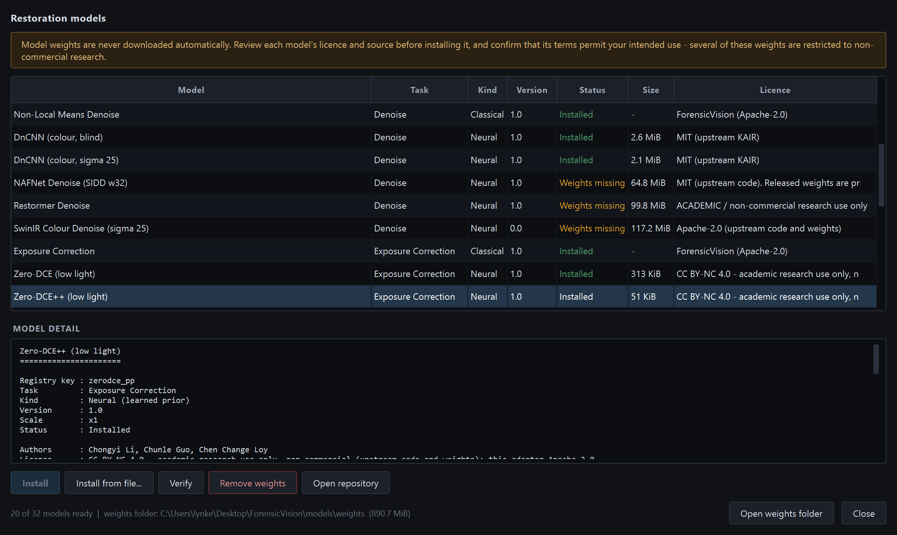

Using ForensicVision
Everything from installing the application to producing a court-ready PDF. Written against version 1.0.0. If something here disagrees with the application, the application is right — please open an issue.
Enhanced imagery is a derivative representation. Neural models can introduce structures — including characters and facial features — that are not present in the source. Read LIMITATIONS.md in full, and see Limitations below for a summary.
Requirements
| Component | Minimum | Recommended |
|---|---|---|
| Operating system | Windows 10, or Linux with a desktop session | Windows 11, or Ubuntu 22.04+ |
| Python | 3.11 | 3.11 or 3.12 |
| Memory | 8 GB | 16 GB or more for large frames |
| Disk | 2 GB for the application | + up to 3 GB if you install every model |
| GPU | None — everything runs on CPU | NVIDIA with 6 GB VRAM or more, CUDA 12.x |
| Display | 1366 × 768 | 1920 × 1080 or larger |
There is no internet requirement. The only network activity the application ever performs is a model-weight download that you start yourself.
Installation
Install Python 3.11 from python.org with Add python.exe to PATH ticked, then:
git clone https://github.com/SihabSahariar/ForensicVision.git cd ForensicVision py -3.11 -m venv .venv .venv\Scripts\Activate.ps1 python -m pip install --upgrade pip python -m pip install -r requirements.txt python main.py --check
If PowerShell refuses to run the activation script, allow it for the
current user with
Set-ExecutionPolicy -Scope CurrentUser RemoteSigned.
Qt needs a few system libraries that are not pulled in by pip:
sudo apt update
sudo apt install python3.11 python3.11-venv git \
libgl1 libglib2.0-0 libxkbcommon-x11-0 \
libxcb-cursor0 libxcb-icccm4 libxcb-image0 \
libxcb-keysyms1 libxcb-randr0 libxcb-render-util0 \
libxcb-xinerama0 libxcb-shape0
git clone https://github.com/SihabSahariar/ForensicVision.git
cd ForensicVision
python3.11 -m venv .venv
source .venv/bin/activate
pip install --upgrade pip
pip install -r requirements.txt
python main.py --check
On Fedora the equivalent packages are mesa-libGL,
libxkbcommon-x11 and xcb-util-cursor.
python main.py --check prints the environment report: Python
version, whether PyTorch and CUDA were found, the weights folder and how many
models are ready. It exits without starting the GUI, so it is safe to run over
SSH or in CI.
python main.py --self-test goes further: it creates a real case
in a temporary folder, imports evidence, verifies its integrity, runs a
classical operator and a neural model, writes a derivative with its
provenance sidecar, renders a PDF report and cleans up. Thirteen checks. Use
it after any install, upgrade or packaging change.
GPU acceleration
Neural models run on CPU by default. To use an NVIDIA GPU, install a CUDA build of PyTorch before or after the requirements file — the wheel index decides which build you get:
# CUDA 12.6 build (check pytorch.org for the current index URL) pip install torch --index-url https://download.pytorch.org/whl/cu126 # confirm the GPU is visible python -c "import torch; print(torch.cuda.is_available(), torch.cuda.get_device_name(0))"
The status bar shows the active device, the CUDA version and live VRAM use. If an inference run exhausts VRAM, ForensicVision retries with a smaller tile before giving up, and tells you in the log that it did so. You can pin the tile size yourself in Tools → Preferences.
- Tile size — the square the image is cut into for inference. Lower it if you run out of memory; raise it for slightly better quality at block boundaries.
- Tile overlap — how far tiles extend into their neighbours. The overlap is blended with a raised-cosine window, so seams do not appear.
- FP16 — halves VRAM use on supported cards. It changes results in the last decimal places; the precision used is recorded in the provenance record.
Full detail, including the CUDA/PyTorch compatibility matrix, is in GPU_SETUP.md.
First run
python main.py
On first launch ForensicVision creates a configuration folder and an empty cases folder, and opens with no case loaded. Nothing is downloaded. The status bar reads Models: N/32 ready — the classical operators are always ready; the rest become ready once you install their weights.
To have something to work with immediately:
python scripts/make_sample.py # ten synthetic test images python main.py --image samples/sample_cctv.jpg --no-case # open one without a case
The interface

- Menu bar — File, Case, Evidence, Analysis, Restoration, View, Tools, Help.
- Toolbar — the eight most frequent actions.
- Viewer / Compare tabs — the image, and the before/after workspace.
- Inspector — one dock with five tabs: Case, Analysis, Restore, History, Log. Jump with Alt+1…5, cycle with Ctrl+Tab, hide with F9.
- Status bar — the safe-mode lock, the compute device, VRAM, and how many models are ready.
The image viewer's context menu carries most of the application — analysis, forensic visualisations, auto enhance, selection tools, region actions, zoom presets, compare, detection, OCR, export and pixel copying. It is built from the same actions as the menu bar, so enabled state and shortcuts always agree. F11 hides the Inspector entirely and gives the image 82% of the window.
Viewing and navigation
- Zoom — mouse wheel zooms under the cursor; 1 2 4 8 jump to 100/200/400/800%; F fits, R resets.
- Pan — middle-drag, or hold Space and drag.
- Pixel readout — hover for coordinates, RGB, grey and HSV, sampled from the source array rather than the rendered pixmap. C toggles a crosshair.
- Above 200% zoom the image is drawn with nearest-neighbour sampling, so you inspect real samples instead of an interpolated reconstruction.
Creating a case
File → New Case (Ctrl+N). You are asked for a case ID, a title, the investigator, the organisation and a description. All of it is written into the case manifest and printed on the report's title page.
A case is a single self-contained folder with its own SQLite database, so it can be zipped, archived or handed over as a unit. See Case folder layout. File → Recent Cases reopens the last few; Ctrl+Shift+O opens any other.
Importing evidence
File → Import Evidence (Ctrl+O). Accepted
formats: .jpg .jpeg .jpe .png
.bmp .tif .tiff .webp.
Import performs five things, in this order:
- Copies the file into
evidence/original/— the file you selected is never modified or moved. - Computes SHA-256, SHA-512 and MD5 of the stored copy. SHA-256 is authoritative; MD5 exists only to cross-reference legacy tooling.
- Extracts EXIF, IPTC, XMP where present, plus image geometry and — for JPEG — the quantisation tables.
- Marks the stored copy read-only on the filesystem while Safe Mode is on.
- Writes an
evidence.importaudit entry recording the source path, the digest and the safe-mode state at the time.
The Case tab then shows the tree and, below it, every metadata field with its value. Copy SHA-256 puts the digest on the clipboard; Verify integrity re-hashes the stored file and compares it against the recorded digest.
ForensicVision records custody from the moment of import. It cannot attest to anything before that — how the file was produced, transferred or handled beforehand is outside its knowledge. Import records the source path and the digest of the copy it stores, and nothing more.
Analysing an image
Analysis → Analyse Image (A), or right-click the image. Results appear on the Analysis tab as nine indicators, each scored 0–100 and colour-coded green, amber or red.

| Indicator | What it measures | Typical response |
|---|---|---|
| Blur | Crete perceptual blur, Laplacian variance, spectral high-frequency ratio | Deconvolution, or a super-resolution model |
| Motion blur | Directional gradient-energy anisotropy, gated by blur level — reports an angle | Wiener with the reported angle, or Restormer |
| Noise | Immerkaer fast variance and Haar-MAD sigma, luminance and chroma separately | Non-local means, or DnCNN / Restormer |
| JPEG artefacts | Phase-selective 8×8 block discontinuity, near-edge ringing, and the container's own quantisation tables | Deblocking, or FBCNN |
| Low resolution | Absolute size, plus an outer/mid spectral annulus ratio that detects prior upscaling | Lanczos for a baseline, then Real-ESRGAN or SwinIR |
| Underexposure | Median luminance and shadow clipping fraction | Zero-DCE++ low-light curves, or a hand-set gamma; then CLAHE |
| Overexposure | Highlight clipping fraction per channel | Exposure correction — clipped detail is gone, not recoverable |
| Low contrast | Percentile dynamic range, RMS contrast, histogram entropy | CLAHE |
| Haze | Dark-channel lower quartile, saturation, relative local contrast, transmission uniformity | Dark-channel-prior dehaze |
Detailed analysis opens the full report: for every indicator, the estimator's name and each raw measurement it produced. Right-click a bar to copy a single score, all scores, or the raw measurements behind one.
Every score is a heuristic derived from classical image statistics, not the output of a validated classifier. Some degradations are genuinely ambiguous: heavy blur and heavy upscaling produce similar spectra, and the tool cannot always separate them. Read the raw measurements before acting on a score.
The JPEG artefacts indicator is the one exception worth knowing about: when the file is a JPEG, the encoder's quantisation tables are read directly from the container. That is a measurement, not an estimate — encode quality is recovered to within a point.
Forensic visualisations
Analysis → Forensic Visualisations, or right-click the image. Eleven renderings are available, all drawn in place of the image without modifying it. Clear Visualisation returns to the frame.
Statistical
RGB histogram · Luminance histogram · Grayscale · Saturation map · Exposure map · Clipping map
Structural
Edge map · High pass · Noise residual · Frequency spectrum · Error level analysis
Error level analysis deserves a caveat: it highlights regions that recompress differently from their surroundings. That can indicate editing, but it is also produced by ordinary things — resizing, text overlays, differing local detail. ELA is an aid to looking, never a verdict on authenticity.
Regions of interest
Pick a selection tool from Evidence, the toolbar or the context menu: rectangle (Ctrl+1), ellipse (Ctrl+2), polygon (Ctrl+3) or freehand (Ctrl+4). Drag on the image to draw; Esc cancels. For a polygon, right-click closes the shape.
With a region active you can:
- Analyse ROI (Shift+A) — score only that region, which is usually far more useful than a whole-frame score when one part of the image is the point.
- Enhance ROI (Shift+E) — restore only that region and blend it back.
- Crop to ROI — create a cropped derivative, itself hashed and recorded.
- Export ROI — write just that region to a file.
- Zoom to ROI — fill the viewport with it.
Restoring an image
Auto Enhance — the recommended path
Restoration → Auto Enhance (E). The engine reads the analysis, chooses operators for the indicators above threshold, orders them sensibly — artefact removal before contrast, enlargement last — and shows you the proposal.

Nothing has run at this point. In the review dialog you can:
- read the rationale for each step — which measurement triggered it, why it sits where it does, and what non-generative alternative exists;
- reorder steps with Up and Down;
- untick a step to skip it while keeping it in the record;
- select a step and change its parameters;
- add a step the recommendation did not include;
- press Cancel and run nothing at all.
Neural steps are shown in amber, and a banner names the pipeline as containing a generative step. Confirm and the pipeline runs on a worker thread; the progress bar reports each step, and Cancel stops at the next step boundary rather than mid-write.
Running a single operator
The Restore tab groups all thirty operators by task. Expand a group, choose a model, and its description, kind and readiness appear beneath it, followed by the controls for its parameters.

- Preview — run on the visible region only, without recording anything.
- Run — execute on the whole image and register the derivative.
- Add to pipeline — stage the step. Build several, then Edit pipeline… to review, or Ctrl+R to run the staged sequence.
Each step's output becomes the next step's input, and the digests chain: step N's output digest is step N+1's input digest. That makes the route from original to final derivative verifiable link by link, not just end to end. Restoration → Return to Original discards the working derivative from the view; it does not delete anything already recorded.
Face restoration
On the standard astronaut benchmark degraded to 128 px,
CodeFormer produced a sharp, confident face wearing eyeglasses the
subject does not wear, and altered apparent age, face shape and
hairline. Nothing in the output separates the measured features from the
invented ones.
The application therefore requires a face-specific confirmation before every
run, measures and records the inter-ocular distance of each source face
(warning below 30 px), exposes the fidelity weight so you can sweep it, and
marks every result may synthesise. Treat the output as an
illustration of what a model considers plausible — never as a depiction of a
person.
Comparing results
View → Compare Original / Enhanced (Ctrl+D) opens the Compare tab.

| Mode | What it shows |
|---|---|
| Side by side | Two panes, zoom and pan locked together at the same apparent scale even when the derivative is four times larger. |
| Split view | One frame with a draggable divider. |
| Overlay | The two images blended, with an opacity slider. |
| Difference | Five renderings — absolute RGB, grayscale, amplified ×8, edge and heatmap — with mean and maximum difference, percentage of pixels changed, and PSNR. |
Difference maps are rendered with a chosen gain and colour mapping, so their apparent intensity is a display choice, not a measurement. Where the two images differ in size the original is resampled for comparison, which itself introduces small differences. The banner under the view says so, permanently.
Exporting a derivative
File → Export Derivative (Ctrl+S), or Export As… (Ctrl+Shift+S) to choose a path and format.
Prefer a lossless format — .png, .tif,
.tiff or .bmp — so the exported pixels are
bit-identical to the derivative that was hashed. Exporting to JPEG recompresses
the image, and the file you hand over will no longer match the digest in the
report.
Every export writes a JSON provenance sidecar next to the image recording the input digest, the model, its version and licence, every parameter, the device, the precision and the timestamp.
Generating a report
Case → Generate Report (Ctrl+P). Choose an output path, name the investigator and organisation, add any case-specific limitations, and pick which optional sections to include — metadata, before/after images, the difference map and the audit trail.

The PDF has fourteen sections:
| # | Section | Contents |
|---|---|---|
| 1 | Case information | ID, title, investigator, organisation, description, counts |
| 2 | Evidence information | Filename, source path, stored path, import time, geometry, bit depth |
| 3 | Cryptographic hashes | SHA-256, SHA-512, MD5 with the MD5 advisory |
| 4 | Metadata | EXIF, IPTC, XMP and JPEG quantisation tables |
| 5 | Image analysis | Every indicator with its raw measurements |
| 6 | Restoration pipeline | Each step with task, kind, may synthesise, and the rationale |
| 7 | Processing parameters | Every parameter actually used |
| 8 | Model information | Authors, licence, paper, repository, weight file and digest |
| 9 | Before / after | Side-by-side thumbnails |
| 10 | Difference analysis | The map and its statistics |
| 11 | Processing history | Every step, device and duration, with the digest chain |
| 12 | Execution environment | Application version, Python, platform, device |
| 13 | Audit trail | Every recorded action in sequence |
| 14 | Limitations and disclaimer | The standing disclaimer plus anything you added |
The mandatory disclaimer is printed on the title page and in the footer of every page, so a printed extract cannot lose it. The finished PDF is hashed and registered in the case database as a report record.
Model Manager
Tools → Model Manager (Ctrl+M).

Every model is listed with its task, kind, version, status, download size and licence. Selecting one shows its full detail: registry key, authors, licence, paper, repository, the method it implements, its parameters, and each weight file with its expected SHA-256.
| Status | Meaning |
|---|---|
| Installed | Weights are present and match their expected digest. Ready to run. |
| Weights missing | The adapter is implemented; the weight file is not on disk. Press Install. |
| Manual install | Upstream publishes no directly downloadable file. Use Install from file… after obtaining it yourself. |
| Not integrated | Declared for completeness but not implemented. The detail pane says exactly what is missing. It will never return a substitute result. |
Installing weights
- Select the model and read its licence — several restrict use to non-commercial research.
- Press Install. A confirmation shows the source URL, the file size and whether the download can be verified against a published SHA-256.
- The download runs on a worker thread and can be cancelled. On completion the digest is checked; a mismatch discards the file.
- Verify re-hashes an installed file at any time. Remove weights deletes it.
Install from file… takes a weight file you obtained elsewhere, verifies it against the expected digest where one is published, and copies it into the weights folder. Or copy files into the folder shown by Open weights folder and restart. Nothing is ever downloaded without you asking for it.
Batch processing
Tools → Batch Processing applies one reviewed pipeline to every image in a folder. Choose the input folder, the output folder and the pipeline, and each image is imported, processed and recorded exactly as it would be individually — with its own hashes, provenance sidecar, history and audit entries.
Batch runs sequentially on a single worker rather than in parallel. GPU inference serialises anyway, so parallelism would only raise peak VRAM and the chance of an out-of-memory failure. Progress is per file, and cancelling stops at the next file boundary, leaving completed work intact and recorded.
OCR and object detection
Both are optional integrations, reached from Analysis or the context menu.
- OCR Region… reads text from the current image or region. It needs Tesseract installed on the system; set the binary path in Preferences if it is not on
PATH. - Detect Objects… runs a detector over the image and lists what it found with confidences. Face detection uses OpenCV YuNet and reports five-point landmarks, so a detected face can be sent straight to face restoration as a region.
If a generative step invented a character, OCR will read that character confidently. Always run OCR against the original as well as the derivative, and report both. A confidence score describes the recogniser's certainty about the pixels it was given — not whether those pixels reflect the scene.
Forensic Safe Mode
On by default; the status bar shows 🔒 FORENSIC SAFE MODE ENABLED. While it is on:
- imported originals are marked read-only on the filesystem;
- the original is never a valid write target for any operation;
- deleting evidence and editing the processing history are refused;
- every state-changing operation writes an audit entry that records the safe-mode state at the time;
- reports include the complete provenance chain.
Turning it off (Tools → Forensic Safe Mode) requires confirming an explicit warning, and the change is itself audited — so a report will show that it was disabled, when, and what happened afterwards. There is no reason to disable it during casework.
Preferences
Tools → Preferences.
| Group | Setting | Notes |
|---|---|---|
| Processing | Compute device | auto, cuda or cpu |
| CUDA device index | Which GPU, on a multi-GPU machine | |
| Half precision (FP16) | Halves VRAM use; recorded in the provenance record | |
| Tile size | Square edge in pixels for tiled inference | |
| Tile overlap | Blended with a raised-cosine window, so no seams | |
| Auto-reduce on OOM | Retry with smaller tiles instead of failing | |
| Forensic | Forensic Safe Mode | Leave this on |
| Confirm before synthesis | Prompt before any step that can invent detail | |
| Allow model downloads | Turn off entirely for an air-gapped machine | |
| Folders | Cases folder | Where new cases are created |
| Model weights | Where weight files live; can point at shared storage | |
| OCR | Preferred engine | Which OCR backend to use |
| Tesseract binary | Needed only when it is not on PATH |
Settings live in the per-user configuration folder — on Windows
%LOCALAPPDATA%\ForensicVision\config, on Linux
~/.config/ForensicVision. Deleting it resets the application to
defaults; cases are unaffected.
Keyboard shortcuts
Also available in the application from Help → Keyboard Shortcuts.
| Keys | Action |
|---|---|
| Ctrl+N | New case |
| Ctrl+Shift+O | Open case |
| Ctrl+O | Import evidence |
| Ctrl+Shift+I | Open image without a case |
| Ctrl+S | Export derivative |
| Ctrl+Shift+S | Export derivative as… |
| A / Shift+A | Analyse image / analyse ROI |
| E / Shift+E | Auto enhance / enhance ROI |
| Ctrl+R | Run the staged pipeline |
| Ctrl+D | Compare original / enhanced |
| Ctrl+P | Generate report |
| Ctrl+M | Model manager |
| F / R | Fit to window / reset view |
| 1 2 4 8 | Zoom 100% / 200% / 400% / 800% |
| Ctrl++ / Ctrl+− | Zoom in / out |
| Mouse wheel | Zoom under the cursor |
| Middle drag, or Space+drag | Pan |
| C | Toggle crosshair |
| Right-click on the image | Context menu — most actions live here |
| F9 / F11 | Show or hide the inspector / focus mode |
| Alt+1 … Alt+5 | Case / Analysis / Restore / History / Log tab |
| Ctrl+Tab | Cycle inspector tabs |
| Ctrl+1…4 | Rectangle / ellipse / polygon / freehand ROI |
| Esc | Cancel ROI drawing |
| Ctrl+Z / Ctrl+Shift+Z | Undo / redo view change |
Undo and redo affect the view only. Original evidence is never modified, so there is nothing to undo on it.
Command line
| Flag | Effect |
|---|---|
--case DIR | Open this case folder on start |
--image FILE | Open this image on start |
--no-case | With --image, inspect the file without creating a case |
--device {auto,cuda,cpu} | Override the configured compute device for this session |
--check | Report the environment and model status, then exit |
--self-test | Run the functional end-to-end self-test, then exit |
--debug | Enable debug-level logging |
--version | Print the version string and exit |
Case folder layout
CASE-0007/ ├── case.json # human-readable manifest ├── case.db # SQLite: evidence, derivatives, steps, audit ├── evidence/original/ # imported originals, read-only in Safe Mode ├── derivatives/ # every enhanced image + JSON provenance sidecars ├── analysis/ # stored analysis results ├── reports/ # generated PDFs ├── metadata/ # extracted metadata └── logs/ # per-case log
The folder is self-contained: archive or copy it and the case travels with its database, its provenance and its reports. Derivatives form a tree — a derivative of a derivative records its parent — which is what the History tab renders and what lets any result be traced back to the original.
Scripting the engine
The restoration engine has no Qt dependency, so it can be driven from a plain Python script — for automation, experiments or as the basis of another front end.
from analysis import analyze_image from core.image_io import load_image from restoration import register_all_models from restoration.auto_engine import AutoRestorationEngine from restoration.pipeline import PipelineRunner register_all_models() image = load_image("frame.jpg") report = analyze_image(image) recommendation = AutoRestorationEngine().recommend(report) for step in recommendation.pipeline.steps: print(step.display_name, step.parameters, step.info().may_synthesise) # FBCNN (colour) {'override_quality': False, 'quality_factor': 50} True # CLAHE Contrast {'clip_limit': 2.0, 'tile_grid': 8} False # Real-ESRGAN x4plus {'scale': 4} True result = PipelineRunner(device="auto").run(image, recommendation.pipeline) print(result.may_synthesise) # True print(result.steps[-1].output_hashes.sha256) # the derivative's digest
The module layout and the extension points for adding an indicator or a model are described in ARCHITECTURE.md.
Troubleshooting
“PyTorch not installed” but I installed it
Check that you installed into the same environment you are launching from —
python -c "import torch; print(torch.__file__)" from the active
virtual environment. If you are running a packaged build, this message can also
mean the bundle's PyTorch is broken rather than absent; run
--self-test, which fails loudly instead of quietly degrading to
CPU-with-classical-only.
CUDA is not detected
The default PyTorch wheel is CPU-only. Install a CUDA build from the index URL
on pytorch.org
matching your driver, then confirm with
python -c "import torch; print(torch.cuda.is_available())".
Out of memory during inference
Lower the tile size in Preferences, enable FP16, close other GPU applications,
or set the device to cpu for that run. With auto-reduce enabled the
application retries with a smaller tile before failing, and says so in the log.
The application will not start on Linux
Almost always a missing Qt platform library. Run with
QT_DEBUG_PLUGINS=1 python main.py to see which one, and install the
packages listed under Installation. Over SSH you
need X forwarding or a local session; --check and
--self-test work headless.
I cannot delete a case folder
Safe Mode marks imported originals read-only, and Windows will refuse to remove them. Clear the read-only attribute first, or delete the case from within the application.
A downloaded weight file fails verification
The download is discarded and nothing is installed — that is the intended behaviour. Retry; if it fails again, download the file manually from the repository shown in the model detail and use Install from file….
Where are the logs?
The Log tab shows the current session live. On disk, each case
writes to its own logs/ folder, and the application log is in the
per-user configuration folder. --debug raises the level.
Frequently asked questions
Can I use ForensicVision's output in court?
That is a question for your jurisdiction, your instructing authority and your own expertise — not for this documentation. What the software can tell you is exactly what it did: every operation, parameter, model, licence and digest is recorded and printed. ForensicVision has no history of court acceptance and makes no claim of admissibility. Where an established, validated commercial tool is available and appropriate, use it.
Can it read an unreadable licence plate?
No tool can. If the characters were never sampled, they are not in the file and no amount of processing will recover them — a model asked for a plate will produce a plausible plate, which is not the same thing. What enhancement can legitimately do is make marginally-sampled detail easier to see. Compare against the Lanczos baseline: if the neural result shows characters the deterministic upscale does not even hint at, treat them as invented.
Does it ever modify my original file?
No. Import copies the file; the copy is what is hashed and stored read-only. The file you selected is never written to, moved or renamed.
Does it phone home?
No. There is no telemetry, no account, no activation and no licence server. The only network request the application ever makes is a model-weight download you start yourself, to a URL it shows you first — and it can be disabled entirely in Preferences.
Why keep classical operators when neural models exist?
Because they cannot invent detail, and because they sometimes simply win. On motion blur Wiener deconvolution beats Restormer by 4 dB in the bundled benchmark; on defocus blur Richardson–Lucy beats Wiener by 3 dB. They also give you a non-generative baseline to compare any neural result against.
Are results reproducible?
Classical operators are deterministic and reproduce exactly. Neural inference reproduces on the same device, precision and library versions — all of which are recorded — but GPU floating-point accumulation order means a different card or a different PyTorch build can differ in the last decimal places. The provenance record captures everything needed to attempt an exact reproduction.
How do I contribute?
Issues and pull requests are welcome at github.com/SihabSahariar/ForensicVision. The conventions that matter most: never fake a result, every operator declares whether it can invent detail, every estimator names its method, nothing long-running touches the GUI thread, and tests accompany behaviour changes.
Limitations
A summary. The authoritative list is LIMITATIONS.md, and it is the most important file in the repository.
The fundamental limit
Information that was never captured cannot be recovered. Enhancement makes existing detail easier to perceive; it does not add measurements that were not taken.
Analysis scores are heuristics
Not the output of a validated classifier. Heavy blur and heavy upscaling produce similar spectra and cannot always be separated.
Face restoration invents faces
Demonstrated, documented and fenced off. Never usable for identification.
ELA is not an authenticity verdict
ForensicVision does not authenticate images or detect manipulation.
No video
The engine is designed to be reusable for it; the application does not process video today.
No measurement or recognition
No photogrammetry, no 3D reconstruction, and no facial recognition, matching or identification of any kind.